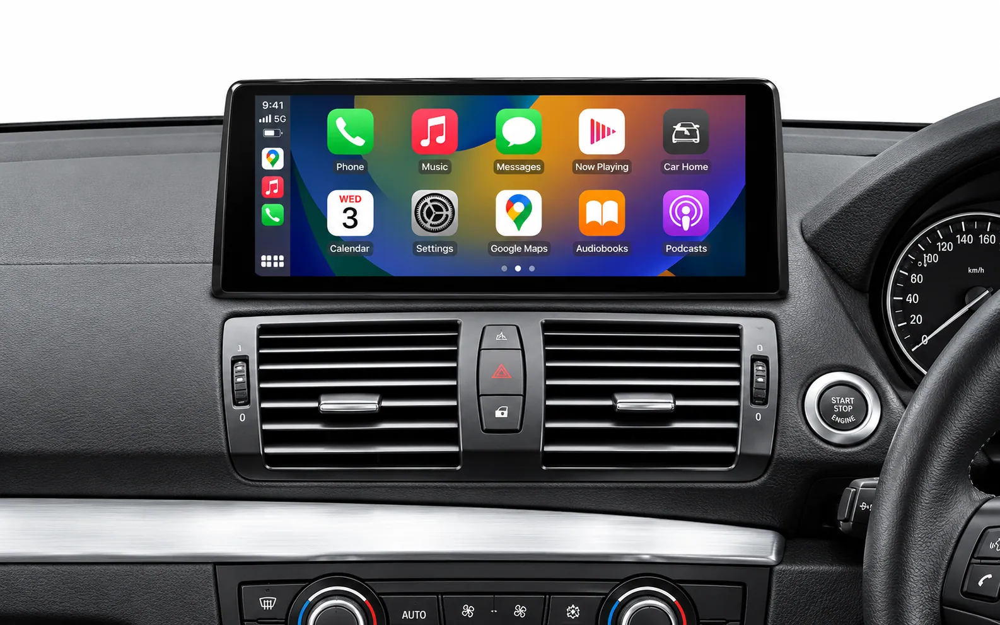
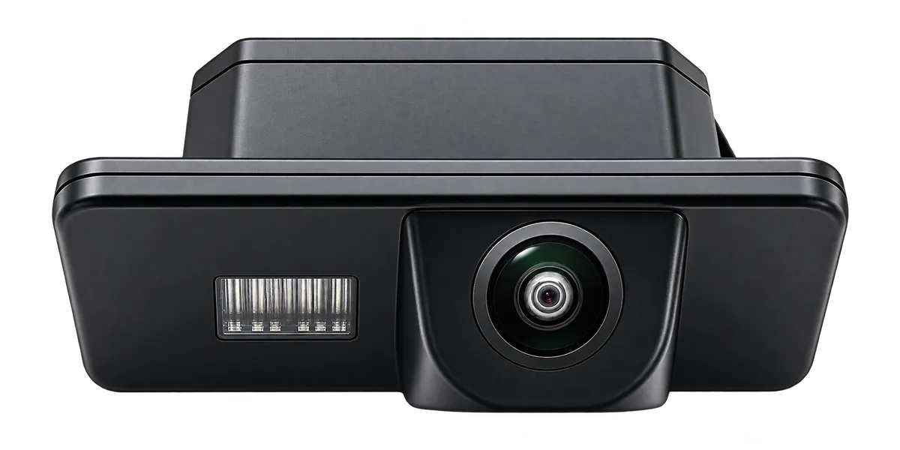
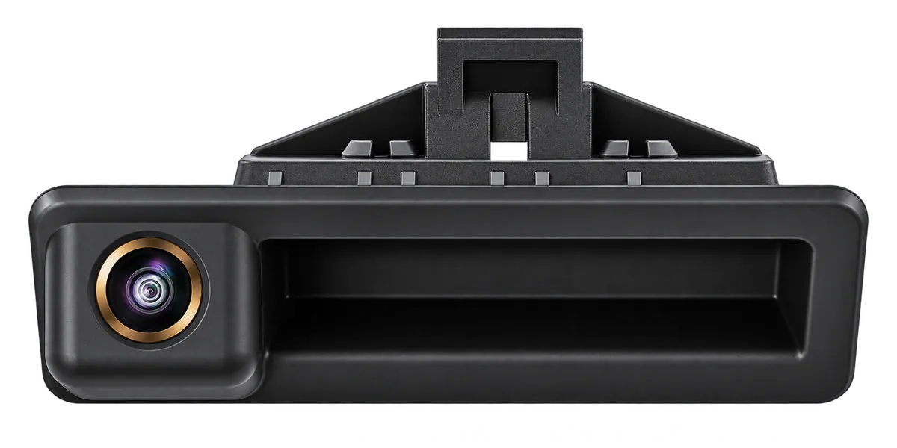

Multimedia upgrade
Factory radio upgrade
Modern touchscreen multimedia with Apple CarPlay and Android Auto, navigation and hands-free connectivity, while retaining the original dashboard character.
Hatchback / Coupé / Convertible
Premium compact BMW range

Multimedia upgrades for the BMW E81 with the original factory radio. Compatibility is checked individually.

Modern touchscreen multimedia with Apple CarPlay and Android Auto, navigation and hands-free connectivity, while retaining the original dashboard character.

Discreet camera integration near the number plate for improved visibility and easier reversing and parking.

Integrated tailgate-handle camera for a clean OEM-style finish and a clear view of obstacles behind the vehicle.

A front-view camera helps you spot low obstacles and judge the distance to kerbs, making parking and manoeuvring in tight spaces easier.
Final configuration depends on the factory audio system, dashboard version and installed equipment.